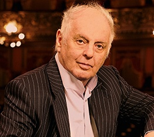
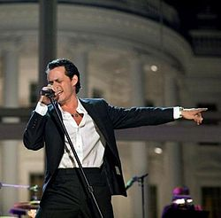

向精神薬から身を守ろう |
安易な投薬により安易な投薬により、大人ばかりか多くの子供も向精神薬の副作用に苦しんでいます。 |
・市民の人権擁護の会(CCHR日本支部)
・アメリカ製薬業界の実態に迫るドキュメンタリー映画「Orgasm Inc.」 ・参考までに：「The Technology of Orgasm」 |
ハンナ・アーレント他 |
◆ナチス戦犯アイヒマンの裁判レポートを発表して、世界中に大論争を巻き起こしたドイツ系ユダヤ人思想家ハンナ・アーレントの実話をもとにしています。
難解だといわれるアーレントですが、彼女が何を考え当時の社会と向きあっていたのか、映画を通して私にもよくわかりました。
悪とは何か、愛とは何かを問い続けた彼女が非難の嵐に晒されても伝えたかったこと、
「The greatest Evil in the world is the Evil commited by nobodies 」が心につき刺さります。
人は誰でも一定の条件下で思考停止状態に陥ればアイヒマンになり得るとし（＊）率先してナチスに協力したユダヤ人、それを見て見ぬふりの同胞をも恐れることなく批判したのです。
自身も収容所を経験している彼女には、全体主義が持つ思考停止が加害者のみならず被害者であるユダヤ人のモラルさえも崩壊させてしまうことのほうが問題であり、
被害者であるユダヤ人を鞭打つことではなかったのです。しかし彼女はユダヤ人社会から裏切り者とされ、大学からも辞職を求められます。
映画の終盤で描かれる大学での最後の講義シーンは圧巻です。親しい友人らに去られ身内からも激しく叩かれ思い悩む彼女を支持したのは若い学生たちだったのです。
ちなみに日本の大学生のほとんどがアーレントの名前さえ知らないと聞かされ、世代の違いがあるとはいえ正直驚かされましたが。 |
・映画｢ハンナ・アーレント」 ・映画「The Act of Killing」(2014年) ・プリーモ・レーヴィ著｢溺れるものと救われるもの｣ |
「ファイト！」 シリーズ武田麻弓著 |
若者にとって本当に必要なのは、賢く生きてきた大人の話なんかじゃないと知らされます。
こんなにまっすぐで曇りの無い彼女に思わず乾杯！ |
|
YOSHI の会 |
AFS 交換留学生としてアメリカに留学していた服部剛丈君（当時16 歳）の銃殺事件は 1992年10月のことでした。 剛丈君亡きあと、ご両親はこの会を設立しアメリカでの「銃規制運動」を続けておられます。 ビデオ「世界に轟いた銃声」他、著書もあります。 事件から20年を経た2012年10月には米国を訪れ現地の教会で記念式典を行いました。 式典では服部美恵子さんのスピーチのほか、合唱｢世界中のYOSHI 君のお母さんへ｣など様々なプログラムが企画されました。 |
|
ウィキリークス |
ハッカー＝悪い人たち、という誤ったイメージないでしょうか！ ようやく日本でも政府がハッカー育成に乗り出していますが、天才ハッカーと呼ばれるジュリアン・アサンジ氏が創設した内部告発サイトです。 あのイラクでの殺戮ビデオ公開によって、国家が国民に知らせることなく犯罪を犯していることが証明されました。 2011年にロンドンで行なわれた哲学者ジジェク氏との対談は、とても面白く興味深い内容です。 TED(各地で開催される世界規模の講演会で著名人だけでなく一般人も参加できる）にも出演しています。 もうひとりの情報暴露者といえばエドワード・スノーデンが思い出されますが、 誰が何と言おうと彼らから社会の本質を知る機会が与えられたことは確かですよね。 |
・アサンジとジジェクの対談 1/2（日本語字幕あり） ・アサンジとジジェクの対談 2/2（日本語字幕あり） ・アサンジ氏のTED Talk (日本語字幕あり） |
磯谷利恵さん事件と司法 |
2007年に名古屋市内で男3人に拉致され、暴行・惨殺・遺棄された磯谷利恵さんのお母さんによる記録です。 この事件で2009年、主犯格の堀被告は再生の余地があるとして死刑を免れましたが、その後以前にも強盗殺人をしていたことがわかり2015年に死刑判決に変わりました。 しかし堀被告は上告中のため死刑執行には至っていません。 2017年10月には、娘を殺された母が敢えてむごい娘の死を語ることで、死刑廃止派弁護士たちに対し犯罪被害や死刑制度について今いちど考えて欲しいと立ち上がっています。 |
|
苗村七郎著
|
只今編集中 |
只今編集中 |
トレバー・ノア
|
アメリカの若者の間で大人気の政治風刺テレビ番組「ザ・ディリー・ショー」で、 ジョン・スチュワートの後継者として 2015 年からホストを務めています。 じつは彼、アパルトヘイト時代の南アフリカで黒人と白人の間に生まれました。 つまり生まれてきたことが自体が違法だったわけです。 それをネタにマイク一本で笑いを取るスタンダップコメディアンとして一躍大ブレイクしたわけです。 なんとも皮肉で痛快な話しだと思いませんか。 著書「トレバー・ノア 生まれたことが犯罪！」もとても興味深く読めますが、コメディアンとしての彼もNetflixで楽しみましょう。 |
・ 「Born a Crime」（英語） |
シモン・ボリバル・
|
国民の8割が貧困層のベネズエラでは、子供たちを非行や犯罪から守る目的でオーケストラ教育が無償で行なわれています。 そんな彼らの2008年広島公演での最後の演目は｢君が代｣でした。 普段は国旗国歌など気にすることのない私ですが、当たり前のように日本の国旗を携え声高らかに歌う彼らに接すると正直考えさせられるものがありました。 自国の国家・国旗を蔑ろにするものが、他国の人々に対しここまで敬意を払うことができるのだろうかと。 2012年7月には、原発事故による影響を心身ともに受けている福島県相馬市の子どもたちのために、 音楽を通して夢や希望を伝える弦楽器の演奏体験ワークショップが行われました。 |
・エル・システマジャパン活動紹介ビデオ（日本語版）2012年7月 福島県相馬市 |
小さな子どもに聞いてほしい曲 |
◆｢J'ai perdu le do de ma clarinette ｣ |
・J'ai perdu le do de ma clarinette ・O Holy Night by Jackie Evancho at the Washington 2010 Christmas ・ANNIE on Broadway2013年 |

ダニエル・バレンボイム
|
常時、暗譜で300超のレパートリーを持つといわれるユダヤ人天才ピアニスト・指揮者です。 |
|
フリッツ・クライスラー
|
◆作曲者であるクライスラーは、３拍子のこの曲を２拍フレーズで演奏しています。
ピアノ伴奏もぴったりついて、心地よ～く揺れて～ウィンナワルツで～す♪ |
|
ギオルク・ショルテイ
|
◆めずらしく日本公演のものがありました。指揮としてのこのタイム感は恐るべし！
|
|
ボビー・ダーリン
|
ポップ、ロック、ジャズ、フォーク＆カントリー、何でもござれの天才歌手でしたが1973年に病気のため37歳という若さでこの世を去りました。 リズム感溢れるMack The Knife(1959)とLive2曲を紹介します。 すごい歌手にこれまた超一流のバック、何度きいても飽きることがありません。 |
|
マット・モンロー
|
映画音楽のテーマ曲である、Born FreeやFrom Russia With Loveを歌っている有名な英国の歌手です。 私のお気に入りは、Walk AwayとPortrait Of My Love、そしてこの曲です。 誠実な歌唱ってあるんですね。いつ聞いてもウルウルしちゃいます。My Wayはこの人のが一番好きかな。 |
|
スティング
|
イギリス出身、ジャズやクラシック音楽も得意です。 ロックバンド（ザ・ポリス）結成以前の1979 年の曲に反原発を歌った「 Nuclear Waste」があります。 自然保護、人権保護運動家としても知られています。 |
|

マーク・アンソニー
|
世界的に有名なラテン音楽界のスーパースターなのに、 日本ではほとんど知られていないプエルトリコ系アメリカ人歌手です。 声量、リズム感、歌のうまさ、すべてが最高レベルだと思いますが、ラテン音楽の魅力はバックミュージシャンの演奏だけでも、これまたご機嫌なことです。 2011年にはキューバ出身のラッパーPitbull とのコラボ曲｢Rain Over Me｣が全米シングルチャート6週連続1位になるなど、 英語で歌うポップな曲もバラードも聴けば聴くほどハマります。 現在に至るまで出す曲出す曲、軒並みヒットを記録しており、その勢いと人気は止まるところを知りません。 |
|

ララ・ファビアン
|
ベルギー生まれのマルチリンガル歌手、遊びのない超高感度マイクを使い完璧なピッチで歌います。 歌詞がすごい！アメリカ商業音楽に慣らされた耳には生々しく聞こえるかもしれませんが、 激しさのなかにも気品と落ち着きがあります。 来日コンサートはまだ実現していません。「Tu Es Mon Autre」のMauraneさん、残念ながら亡くなられてしまいました。 |
|
ナット・キング・コール
|
只今編集中 |
只今編集中 |
MICHAEL JACKSONと仲間
|
◆皆で歌うことで困難に立ち向かう、米国の人気テレビドラマ｢glee ｣とも重なります。 |
|
エスペランサ・スポルディング
|
只今編集中 |
只今編集中 |
ケンドリック・ラマ―
|
只今編集中 |
只今編集中 |